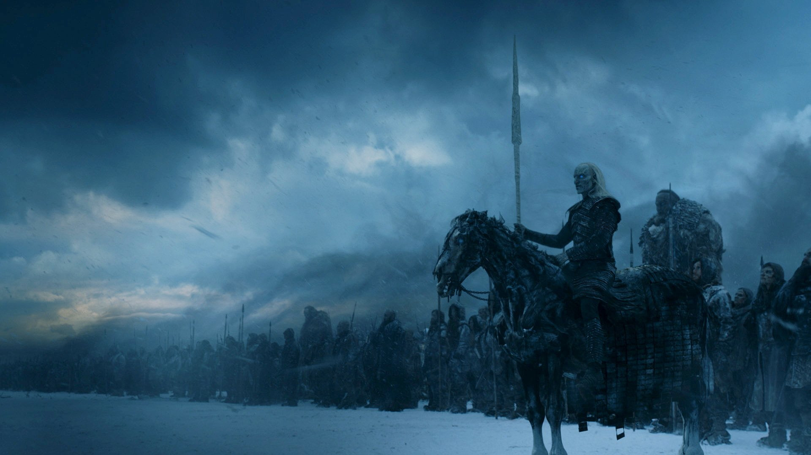
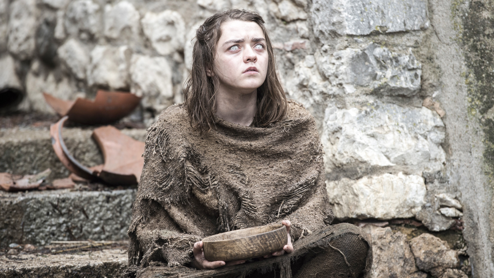
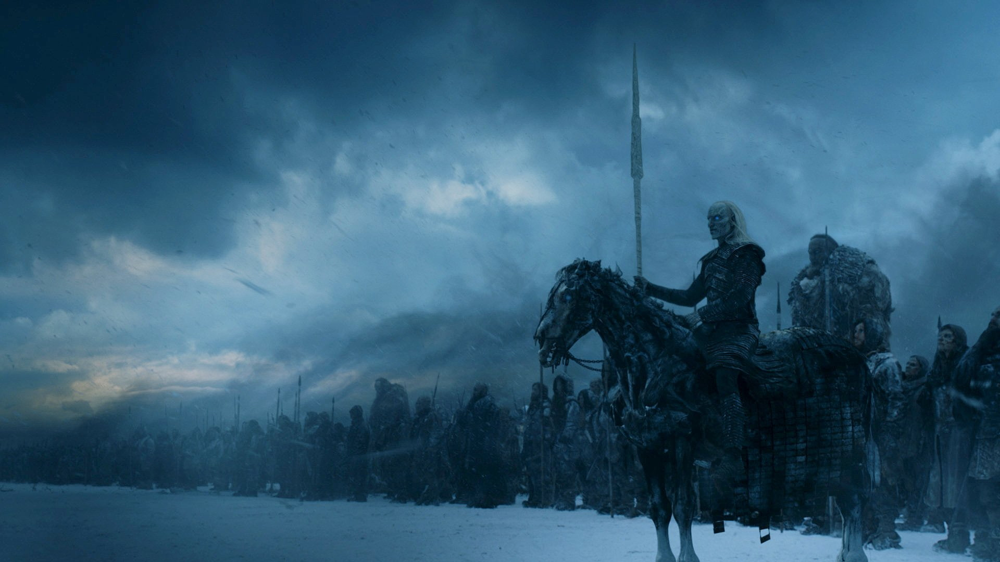
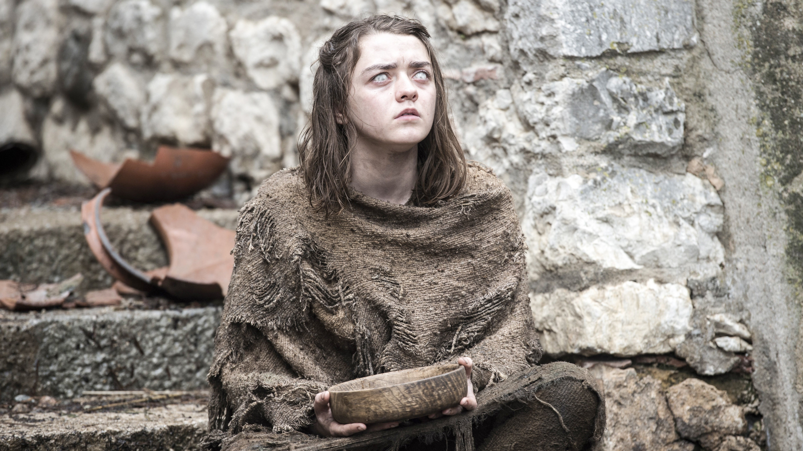

Game of Thrones conta a históra de um lugar onde uma força destruiu o equilíbrio das estações, há muito tempo. Em uma terra onde os verões podem durar vários anos e o inverno toda uma vida, as reivindicações e as forças sobrenaturais correm as portas do Reino dos Sete Reinos. A irmandade da Patrulha da Noite busca proteger o reino de cada criatura que pode vir de lá da Muralha, mas já não tem os recursos necessários para garantir a segurança de todos. Depois de um verão de dez anos, um inverno rigoroso promete chegar com um futuro mais sombrio. Enquanto isso, conspirações e rivalidades correm no jogo político pela disputa do Trono de Ferro, o símbolo do poder absoluto.